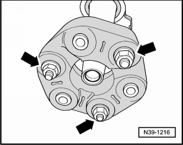
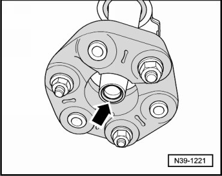
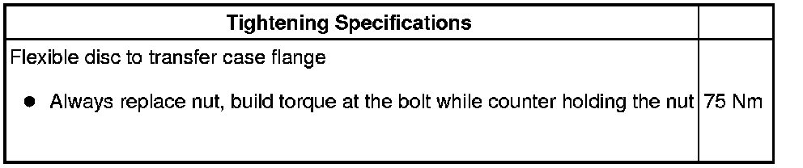

Rear Driveshaft Flexible Disc
Rear Driveshaft Flexible Disc
Special tools, testers and auxiliary items required
• Torque wrench (VAG 1331)
• Torque wrench (VAG 1332)
• Brake pedal loading device (VAG 1869/2)
A twin-post hoist should be used when working on the rear driveshaft.
Before removing, mark the positions of all parts in relation to each other. Reinstall in the same position otherwise imbalance will be excessive, the bearings could be damaged causing rumbling noises.
Do not flex rear driveshaft; store only extended with center bearing bracket facing upwards.
Removing
- Select lever position "N" with the selector lever.
- Insert brake pedal depressor (VAG 1869/2).
- Raise vehicle.
- Remove rear part of exhaust system:
- Remove the rear driveshaft. Refer to --> [ Rear Driveshaft ] Rear Driveshaft.
- Remove flexible disc from rear driveshaft - arrows -.

Installing
Install in reverse sequence; note the following points:
Seal in rear driveshaft flange at flange/transfer case must not be damaged when removing and installing.

Replace rear driveshaft if damaged.
Do not tip rear driveshaft; push horizontally onto guide shaft.
- Install rear driveshaft. Refer to --> [ Rear Driveshaft ] Rear Driveshaft.
- After installing rear driveshaft, install center bearing so that it is free of stress. Refer to --> [ Rear Driveshaft Center Bearing ] Rear Driveshaft Center Bearing.
- Install rear part of exhaust system:
